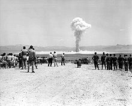
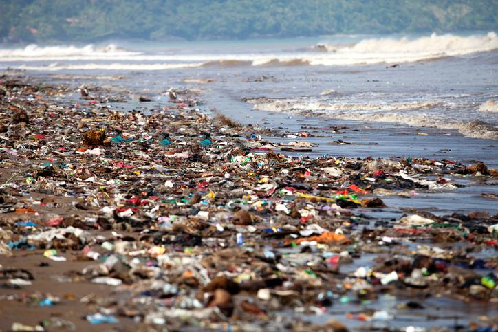
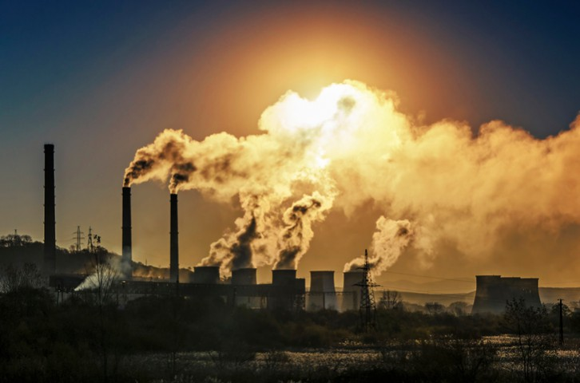
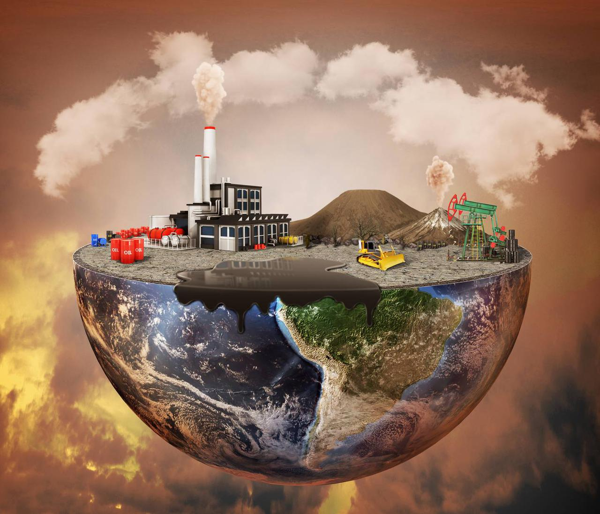
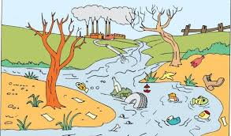

Causas de la contaminacion ambiental
- Tala Excesiva de arboles
- Emisiones y VertidiosIndrustriales a la Atmosfera y ala Hidrosfera Extraccion procesamiento y refinamiento de combustible fosiles (pegroleo ,Carbon y gas natural

La contaminación ambiental se inicio en América del sur 240 años antes de la Revolución industrial. En un bloque de hielo a gran altitud en el glaciar Quelccaya de los Andes peruanos, ah parecido la evidencia más temprana de contaminación atmosférica a gran escala debida actividades humanas.
¿Qué hacer para evitar la contaminación ambiental?
En el caso del aire, se debe controlar la cantidad de humo que sueltan las industrias y los automóviles. Tratar de usar la bicicleta con mayor frecuencia y caminar todos los días. Cada año en tu ciudad se celebra el Día sin carro para que pensemos y actuemos frente al tema de la contaminación ambiental. Para cuidar el agua, lo ideal es evitar que todas las sustancias dañinas entren en contacto con ella.

Consumir menos productos desechables, ser más ecológicos. Es decir, entender que lo que hagamos o dejemos de hacer al medio ambiente, influye sobre nuestras vidas y nuestro futuro.
La contaminación ambiental es la presencia de sustancias o elementos dañinos para los seres humanos y los ecosistemas (seres vivos).
Existen diferentes tipos de contaminación, pero básicamente se pueden dividir en: contaminación del aire, contaminación de suelos (tierra) y contaminación del agua. El aire que respiras es importante para la vida en la Tierra.

Todos los seres vivos necesitamos de esta fuente de oxígeno para existir. Sin embargo, hay muchos elementos que pueden llenarlo de impurezas que pueden provocar malestar en las personas, en las plantas y en los animales. Si respiramos aire sucio, nos enfermamos¿Has visto el humo que sale de las chimeneas de las grandes fábricas? Este es uno de los principales contaminantes.

También hay otro humo que es uno de los más fuertes: se trata del que botan todos los automóviles en la ciudad, especialmente los camiones y buses. Pero, algunos carros viejos también contaminan. Estos gases tienen malos olores, quitan la visibilidad y pueden producir tos e irritación en los ojos. Cuando se contaminan la tierra y el agua, también podemos tener problemas.

La contaminación del suelo es la presencia de compuestos químicos hechos por el hombre u otra alteración al ambiente natural del suelo. El agua de los ríos contaminados que se use en los riegos de los cultivos, daña las frutas y verduras que nos sirven de alimento
Cuando el agua de los ríos se llena de desechos como basura o espuma de jabón y sustancias químicas de las fábricas, pierde sus características iniciales y ya no puede usarse para beber, cocinar o bañarse.
